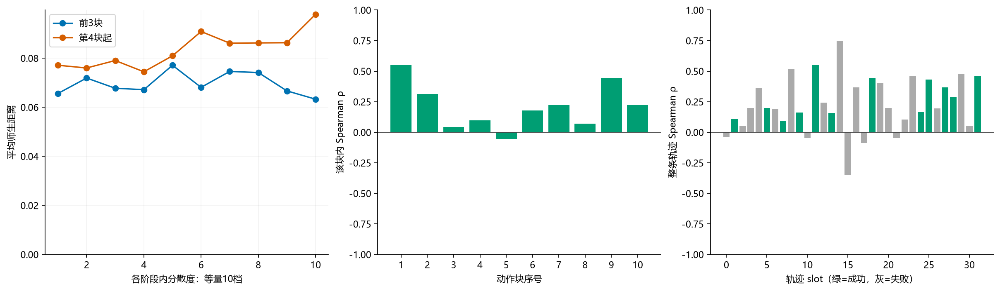

1 · 局部确实能看到，但不是处处重合
蓝线：学生用4种噪声推理，动作有多分散。橙线：同一观察、同一主噪声下，学生与老师动作差多少。蓝线并非严格的概率熵，橙线也不是动作对错。

slot25成功，70–80附近两线同升，ρ＝0.430；10–18附近蓝线升高，橙线变化小。原32条中12条成功，单看好看的轨迹不能代表整体。
原图册：12条成功轨迹＋9种统计图 · slot25视频、12帧与可编辑图 · 服务器与蒸馏
蓝线：学生用4种噪声推理，动作有多分散。橙线：同一观察、同一主噪声下，学生与老师动作差多少。蓝线并非严格的概率熵，橙线也不是动作对错。
slot25成功，70–80附近两线同升，ρ＝0.430；10–18附近蓝线升高，橙线变化小。原32条中12条成功，单看好看的轨迹不能代表整体。

12条成功轨迹各自都正相关（0.09–0.55），合并后却只有0.014。原因之一是每条轨迹的基线不同：某条一直很分散，但与老师一直很接近，混合后会掩盖各自的同向变化。
动作块内越靠后，两量也可能共同变化。分块看相关约0.435，扣除块内位置趋势后约0.161；所以时间位置解释了部分关联。

原蓝线会除以动作本身的大小：动作很小时，小差异也可能被放大。橙线是绝对距离。补充改成绝对分散度后，整体相关从0.089到0.369，更清楚，但这是另一指标，不能悄悄替换原定义。
仅用未执行的另3个噪声，绝对相关0.368，因此共享主噪声不是全部原因。原指标整轨迹bootstrap 95%区间−0.038～0.209，本批尚不能确认稳定的总体正相关。
| 因素 | 优先处理 |
|---|---|
| 归一化与动作维度 | 相对/绝对同时报告；关节和夹爪分开，查是否少数坐标主导。 |
| 动作位置与场景混合 | 按轨迹、前3块/后段分组；扣除块内位置趋势。 |
| 实际执行与提交前缀 | 原5820是提交动作位置；提前成功后的未到达末帧应排除。slot25已从100截到97，ρ仍0.434。 |
| 样本量 | 只有32局、12成功；4噪声估分散度也有波动。更多独立种子能检验是否复现。 |
| 强模型的含义 | 老师成功率更高，也不意味着每个动作都正确；距离衡量分歧，不能直接解释成错误。 |
建议：先用保存的数组/映射做前三项，不改推理；若补采，保持Clean CP140→Uτ3 CP70、N10/H50/C20，补96条新种子到总128（32并行×3批），成败均纳入。不要为了图更明显改任务、挑成功或改变老师。需要比较4/8噪声时另作同轨迹重算，避免同时改变执行。
本轮复看现有图与统计，未启动新采集。上述分项及补采是后续方案；未把尚未完成的分项分析写成结果。